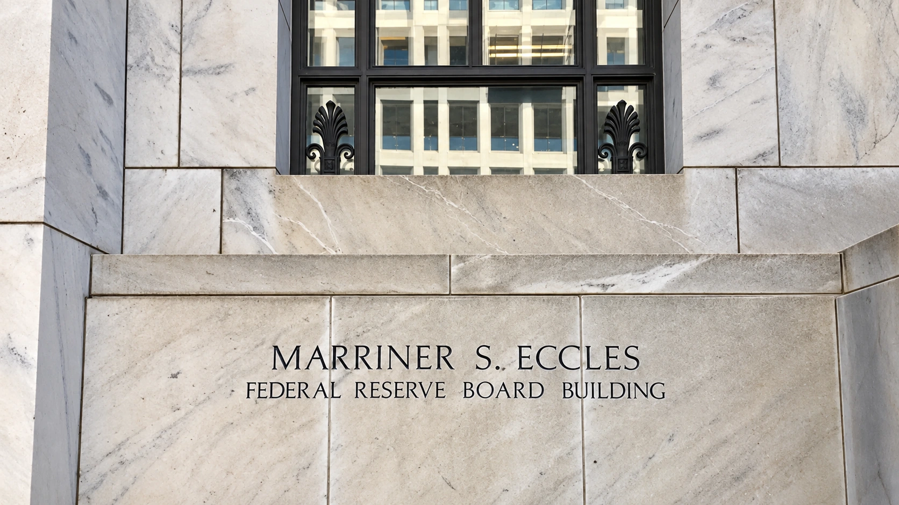

Fed Holds Rates at 3.75–4% as Two Officials Back an Increase
The Fed kept borrowing costs steady while describing strong activity and elevated inflation. Two voters preferred a quarter-point increase.

The Federal Reserve left its target interest-rate range at 3.75% to 4% on Wednesday, pausing while it assesses an economy that policymakers described as expanding strongly with inflation still elevated. The decision passed by a 10–2 vote. Lisa Cook and Beth Hammack dissented because they preferred a quarter-percentage-point increase, making the disagreement about tighter policy rather than an immediate cut.
The statement puts additional economic information at the center of the next decision. It says more evidence will help officials determine the stance needed to return inflation to their 2% goal. It does not commit the committee to a December increase, promise a cut or publish a timetable for a particular destination for rates.
For borrowers, Wednesday means the central bank's overnight target is unchanged. It does not freeze every mortgage quote, credit-card rate or corporate financing cost. Those prices also reflect contract terms, lenders' decisions and expectations for future policy. Our guide to rate expectations explains why market pricing can change even when the current target stays in place.
A pause accompanies a stronger description of activity
The committee described domestic spending as resilient, productivity growth as strong and capital investment as robust. It said job gains had kept pace with the workforce and unemployment had changed little. Together, those observations explain why an unchanged rate should not automatically be interpreted as a response to collapsing demand or rapidly deteriorating employment.
At the same time, officials said inflation remained elevated and uncertainty was high, partly because of geopolitical developments. The combination leaves a policy tradeoff: strong activity may give the economy room to absorb restraint, while persistent price pressure argues against assuming that the inflation problem has already been resolved. The statement describes that tension without supplying a guaranteed next move.
The two dissenters make the distinction especially clear. Cook and Hammack favored raising the range by 0.25 percentage point at this meeting. Their preferred action would have tightened policy sooner. It would be inaccurate to group these dissents with votes for lower rates or to describe the outcome as a unanimous judgment that further restraint is unnecessary.
The operating framework remains in place
A separate implementation note maintains the interest rate on reserve balances at 3.90%, effective October 29. The standing overnight repurchase rate remains 4%, while overnight reverse repurchase operations have an offering rate of 3.75%. These are tools used to implement monetary policy, rather than separate retail borrowing offers available to households.
The instructions also allow purchases of Treasury bills and, if needed, other short-dated Treasury securities to maintain ample reserves. Treasury principal payments are to be rolled over, while agency-security principal payments are reinvested in Treasury bills. The stated reserve-management purpose matters: those operational instructions should not, by themselves, be presented as a new rate cut or a promise of broad economic stimulus.
Investors therefore need to read the target decision alongside the implementation details. Different rates and transactions serve different functions within the same framework. TTN's explanation of banking-system liquidity discusses why the amount of reserves and the price of overnight money are related, but are not interchangeable policy measures.
The evidence between meetings still matters
The U.S. decision also differs from Wednesday's Canadian quarter-point increase. A shared international energy shock does not require central banks to act on identical schedules. Domestic demand, inflation dynamics and the starting level of interest rates can lead neighboring economies to different decisions without either announcement determining the other's next step.
For households and businesses planning financing, the practical consequence is continued uncertainty about the path rather than an automatic change in today's payments. For investors, coming inflation, spending and employment evidence will test the balance described in the statement. Wednesday delivers an unchanged target and a visible minority favoring an increase. It leaves the next policy choice conditional on the information still to arrive.
Sources and methodology
Sources checked October 28, 2026. Official decisions, company statements and reported findings are attributed in the text. Financial and operational implications are TTN editorial analysis.